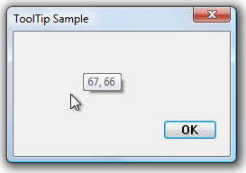

Tracking tooltips remain visible until they are explicitly closed by the application, and can change position on the screen dynamically. They are supported by version 4.70 and later of the common controls.
To create a tracking tooltip, include the TTF_TRACK flag in the uFlags member of the TOOLINFO structure when sending the TTM_ADDTOOL message.
Your application must manually activate (show) and deactivate (hide) a tracking tooltip by sending a TTM_TRACKACTIVATE message. While a tracking tooltip is active, your application must specify the location of the tooltip by sending TTM_TRACKPOSITION messages to the tooltip control. Because the application handles tasks such as positioning the tooltip, tracking tooltips do not use the TTF_SUBCLASS flag or the TTM_RELAYEVENT message.
The TTM_TRACKPOSITION message causes the tooltip control to display the window using one of two placement styles:
The uFlags member of the TOOLINFO structure that is used in the example includes the TTF_ABSOLUTE flag. Without this flag, the tooltip control chooses where to display the tooltip, and its position relative to the dialog box may change suddenly as the mouse pointer moves.
[!Note]
g_toolItemis a global TOOLINFO structure.
Â
The following example demonstrates how to create a tracking tooltip control. The example specifies the main window's entire client area as the tool.
HWND CreateTrackingToolTip(int toolID, HWND hDlg, WCHAR* pText)
{
// Create a tooltip.
HWND hwndTT = CreateWindowEx(WS_EX_TOPMOST, TOOLTIPS_CLASS, NULL,
WS_POPUP | TTS_NOPREFIX | TTS_ALWAYSTIP,
CW_USEDEFAULT, CW_USEDEFAULT, CW_USEDEFAULT, CW_USEDEFAULT,
hDlg, NULL, g_hInst,NULL);
if (!hwndTT)
{
return NULL;
}
// Set up the tool information. In this case, the "tool" is the entire parent window.
g_toolItem.cbSize = sizeof(TOOLINFO);
g_toolItem.uFlags = TTF_IDISHWND | TTF_TRACK | TTF_ABSOLUTE;
g_toolItem.hwnd = hDlg;
g_toolItem.hinst = g_hInst;
g_toolItem.lpszText = pText;
g_toolItem.uId = (UINT_PTR)hDlg;
GetClientRect (hDlg, &g_toolItem.rect);
// Associate the tooltip with the tool window.
SendMessage(hwndTT, TTM_ADDTOOL, 0, (LPARAM) (LPTOOLINFO) &g_toolItem);
return hwndTT;
}
When the mouse pointer is within the client area, the tooltip is active and displays the cursor coordinates, as shown in the following illustration.

The following example code is from the window procedure for a dialog box that displays the tracking tooltip created in the preceding example. The global Boolean variable g_TrackingMouse is used to determine whether it is necessary to reactivate the tooltip and reset mouse tracking so that the application is notified when the mouse pointer leaves the client area of the dialog box.
//g_hwndTrackingTT is a global HWND variable
case WM_INITDIALOG:
InitCommonControls();
g_hwndTrackingTT = CreateTrackingToolTip(IDC_BUTTON1, hDlg, L"");
return TRUE;
case WM_MOUSELEAVE: // The mouse pointer has left our window. Deactivate the tooltip.
SendMessage(g_hwndTrackingTT, TTM_TRACKACTIVATE, (WPARAM)FALSE, (LPARAM)&g_toolItem);
g_TrackingMouse = FALSE;
return FALSE;
case WM_MOUSEMOVE:
static int oldX, oldY;
int newX, newY;
if (!g_TrackingMouse) // The mouse has just entered the window.
{ // Request notification when the mouse leaves.
TRACKMOUSEEVENT tme = { sizeof(TRACKMOUSEEVENT) };
tme.hwndTrack = hDlg;
tme.dwFlags = TME_LEAVE;
TrackMouseEvent(&tme);
// Activate the tooltip.
SendMessage(g_hwndTrackingTT, TTM_TRACKACTIVATE, (WPARAM)TRUE, (LPARAM)&g_toolItem);
g_TrackingMouse = TRUE;
}
newX = GET_X_LPARAM(lParam);
newY = GET_Y_LPARAM(lParam);
// Make sure the mouse has actually moved. The presence of the tooltip
// causes Windows to send the message continuously.
if ((newX != oldX) || (newY != oldY))
{
oldX = newX;
oldY = newY;
// Update the text.
WCHAR coords[12];
swprintf_s(coords, ARRAYSIZE(coords), L"%d, %d", newX, newY);
g_toolItem.lpszText = coords;
SendMessage(g_hwndTrackingTT, TTM_SETTOOLINFO, 0, (LPARAM)&g_toolItem);
// Position the tooltip. The coordinates are adjusted so that the tooltip does not overlap the mouse pointer.
POINT pt = { newX, newY };
ClientToScreen(hDlg, &pt);
SendMessage(g_hwndTrackingTT, TTM_TRACKPOSITION, 0, (LPARAM)MAKELONG(pt.x + 10, pt.y - 20));
}
return FALSE;
Â
Â